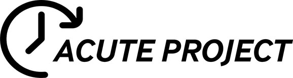
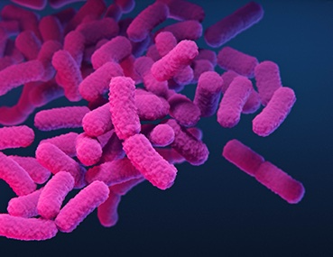

Current projects

Developing time to blood culture positivity (Tpos) as a pharmacodynamic biomarker
Adapting bloodculture systems to monitor the bactericidal activity of antibiotics used to treat carbapenem-resistant Enterobacterales
The effectiveness of antibiotic therapy in critically-ill patients with sepsis is often compromised by highly variable pharmacokinetics that can lead to subtherapeutic exposures and treatment failures, especially in the management of infections caused by multidrug resistant Gram-negative bacteria. Pharmacometric model-informed dosing and therapeutic drug monitoring (TDM) have been advanced as strategies for individualising antibiotic dosing in critically-ill patients, but the availability of these tools and expertise for implementation (especially for newer antibiotics) is often not available. The ACUTE project (Adapting Bloodculture systems to monitor antimicrobial efficacy) proposes to develop time-to positivity (Tpos) reported most continuously monitored bloodculture incubators in clinical microbiology laboratories into an a surrogate pharmacodynamic biomarker for antibacterial bactericidal activity. In this project, we propose to develop this assay as a “proof of concept” for monitoring ceftazidime-avibactam therapy of KPC-carbapenemase producing Klebsiella pneumoniae. (KPC-Kp) This will be accomplished through two specific aims and several workpackages. The first specific aim will establish the quantitative relationships between Tpos and several representative KPC-Kp strains in the absence and after exposure to a range of clinically-relevant exposures of ceftazidime-avibactam. The second specific aim will measure in 20 critically-ill patients receiving ceftazidime-avibactam treatment for KPC-KP bloodstream infections using KPC-Kp “indicator” strains or the patient’s own isolate, and correlate Tpos results with blood concentration-time courses of ceftazidime and avibactam and PK/PD target attainment (free drug T>MIC ) simulated for each patient using Bayesian-informed estimates of individual PK parameters from population pharmacokinetic models and LC/MS/MS analysis of ceftazidime-avibactam in serum. This study will form the basis for the broader development and validation of Tpos as a surrogate pharmacodynamic biomarker for antimicrobial activity in serum, that could potentially be used for screening or monitoring antimicrobial efficacy in the critically-ill patient.

Prognostic Aspergillus Models with Leukemia Sequencing
Combined clinical-genetic risk model for aspergillosis
Polymorphisms in genes encoding fungal pattern recognition receptors (PRRs) of the innate immune system are associated with increased risk of invasive aspergillosis (IA), but incorporation genetic risk factors in clinical decision making remains limited. We propose to develop a combined clinical/genetic risk model suitable for accurately predicting an individual patient’s risk for developing IA within 60 days of admission for chemotherapy for acute myeloid leukemia/myelodysplastic syndromes (AML/MDS). We will develop a clinical risk model from a large data registry of 788 patients over 2,713 hospital admissions (2007-2020) for AML/MDS treatment that was associated with a 5.5% incidence of EORTC/MSG-defined probable or proven mold disease. Single nucleotide polymorphisms (SNPs) in 4 genes encoding fungal PRRs will be analyzed in parallel with relevant myeloid mutations from banked samples from next generation sequencing (NGS) analysis in a nested cohort of 234 patients (534 admissions) from 2017-2020. A polygenic risk score (PRS) will be developed to explore interactions with clinical risk factors and fungal PRR/myeloid SNPs to develop an absolute risk prediction model for supporting clinical decisions in the management of invasive mold disease in patients undergoing treatment of AML/MDS.

Predicting Carbapenemase-Resistant Enterbacterales Infection after Liver Transplantation
Giannella M, Freire M, Rinaldi M, Abdala E, Rubin A, Mularoni A, Gruttadauria S, Grossi P, Shbaklo N, Tandoi F, Ferrarese A, Burra P, Fernandes R, Aranha Camargo LF, Asensio A, Alagna L, Bandera A, Simkins J, Abbo L, Halpern M, Santana Girao E, Valerio M, Muñoz P, Fernandez Yunquera A, Statlender L, Yahav D, Franceschini E, Graziano E, Morelli MC, Cescon M, Viale P, Lewis R, CRECOLT study group. Development of a Risk Prediction Model for Carbapenem-resistant Enterobacteriaceae Infection After Liver Transplantation: A Multinational Cohort Study. Clin Infect Dis 2021; 73:e955–e966.
Available at: http://dx.doi.org/10.1093/cid/ciab109.
A total of 840 LT recipients found to be colonized with CRE before (n = 203) or after (n = 637) LT were enrolled. CRE infection was diagnosed in 250 (29.7%) patients within 19 (interquartile range [IQR], 9–42) days after LT. Pre- and post-LT colonization, multisite post-LT colonization, prolonged mechanical ventilation, acute renal injury, and surgical reintervention were retained in the prediction model. Median 30- and 60-day predicted risk was 15% (IQR, 11–24) and 21% (IQR, 15–33), respectively. Discrimination and prediction accuracy for CRE infection was acceptable on derivation (area under the curve [AUC], 74.6; Brier index, 16.3) and bootstrapped validation dataset (AUC, 73.9; Brier index, 16.6). Decision-curve analysis suggested net benefit of model-directed intervention over default strategies (treat all, treat none) when CRE infection probability exceeded 10%.